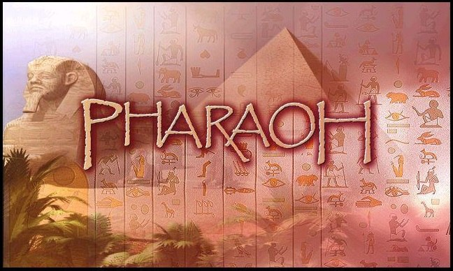
...Egypt — a world of majestic pyramids, the turbulent waters of the Nile and one of the warmest, coziest 2D strategy games from 1999! Here you become an architect and ruler, building cities, caring for the well-being of your citizens and erecting monuments worthy of pharaohs. Did you know Pharaoh had a full-fledged demo? Although that was normal for the industry of that period, it's the differences from the retail version that we'll be talking about. (Lots of pictures)
…but keep in mind that in 2025 all this splendor may fail to start and will require some file-work to run on modern systems. The most reliable way to enjoy this old but still magical city-builder without glitches is to install a WinXP virtual machine — but even that doesn't always work. A VM helps get rid of most problems; unfortunately, on every OS after XP the game runs worse and worse.
On my system, for example, the Steam version looked like this no matter what I tried.
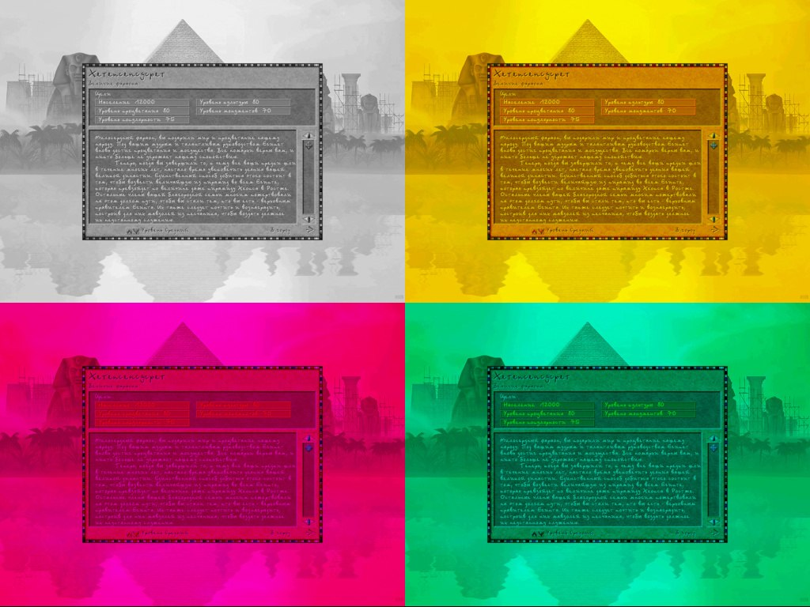
If you do decide to install this wonder-sim without a VM, be ready for tambourine dances and crashes, and you may also be in for:
- freezes on the first screen;
- freezes in the main menu (there's sound, but the picture doesn't change);
- a long startup of up to a couple of minutes (looks like a freeze);
- regular crashes after 30–60 minutes (requires a restart, sometimes drags the laptop down with it);
- UI displacement, when mouse clicks don't line up with the display, and no sound because the system lacks the old DX API; sometimes installing MS Visual Studio 6/7 with the bundled bits helps, or an old DirectX 9.0c (2010), which still contained the needed DLLs.
The effectiveness of the file-work varies depending on your system and settings, the diameter of your tambourine and the phase of the moon. Most of the bugs are known, and in places there are recipes for fixing them, but nobody has cancelled the moon. If the nostalgia has really bitten you hard and you want to play the native game on a modern Windows 10 (on version 11, 90% won't work, not even the GOG version, not even with community patches and fixes), then first take a look at the possible solutions here: steamcommunity.com/sharedfiles/.... Now let me tell you a bit more about the funniest errors and their possible causes, and then we'll get to the demo and the differences.
Too good a graphics card, or the 640×480 bug
On first launch the game always starts in fullscreen mode at 640×480. For modern graphics cards this became a problem, and many consider switching to that mode an error — or the minimum supported resolution is even 800×600 or 1024×768. As a result you see something like this, or similar, or a completely black screen, or the game just hangs. The graphics settings can be changed from the menu during a mission, but you still have to get to it, as you understand.
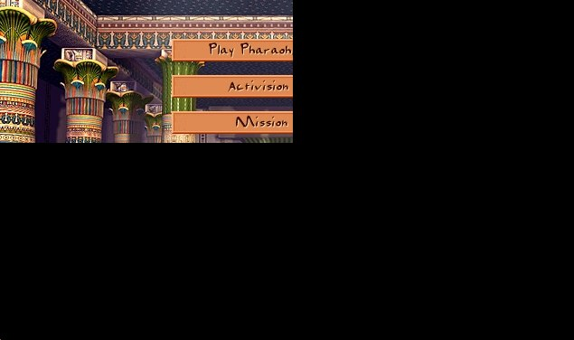
Too good a screen, or the 125% bug
If you use a laptop or a 2K+ monitor, then you most likely have scaling set to 125% or more. This makes UI elements bigger and text more readable. But not for old games! In Pharaoh such scaling tricks lead to problems like image or UI elements being displaced, displayed not where they should be. But that's only half the trouble — at least you can still play. It's when the mouse doesn't hit the buttons that the game becomes practically unplayable. The screenshot below shows a playable variant: the UI renders in absolute coordinates, i.e. it's 1024×768, the resolution the game thinks it is — you couldn't set anything higher in the settings anyway. It's worse when, on systems with scaling, the OS starts sending the mouse position into the black area, while the game keeps handling buttons where it rendered them.
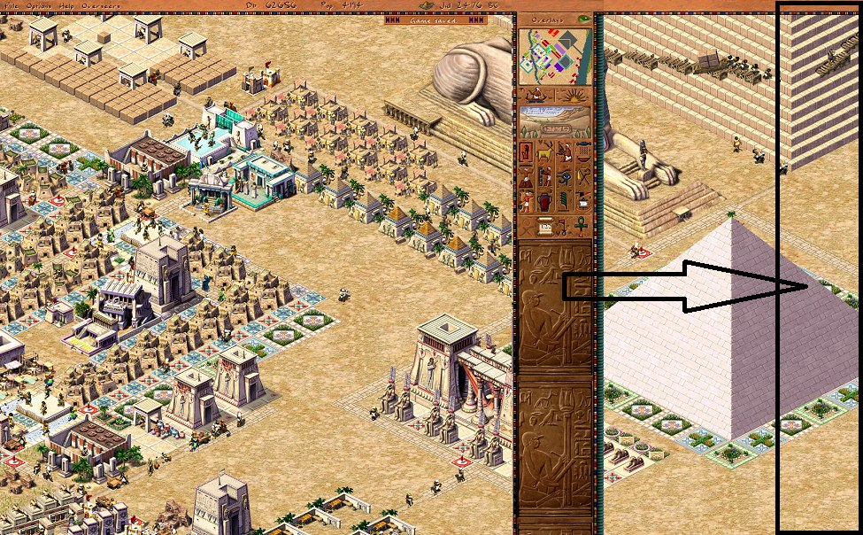
Everyone's in my way, or the overlay bug
I don't know how, but it's possible that other applications' overlays break something in the game's render. Trying to open certain programs, like Discord, which can embed their overlay over a running application, ends badly in most cases. A message comes in from friends — and you turn on Discord.
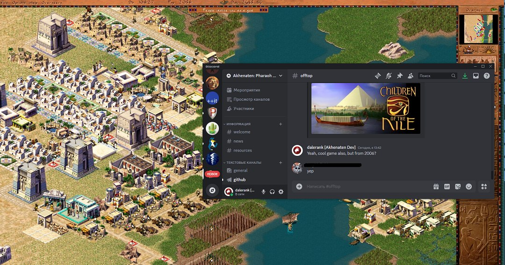
Welcome to restarting the game; instead of a render there'll be a black screen. But not always and not everything — Chrome, for example, doesn't suffer from this in the slightest.
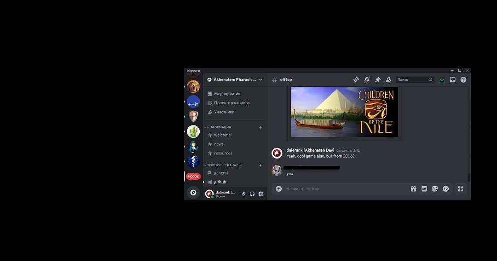
The community figured out which software is highly likely to hang the game's render.
- AMD tools
- NVidia tools and "GeForce Experience"
- AfterBurner, RivaTuner, Origin (99% hang it)
- Discord, Skype, Windows Xbox (90% hang it)
- Steam (doesn't interfere, but may crash the game when you open the chat)
Who are you knocking on, warrior?
The Steam version may fail to start or start with a substantial 2–3 minute delay for one strange reason. The game tries to connect to 40.113.76.66:443 — a long-dead service from Microsoft's Windows Game Explorer. Naturally, nobody answers there, and it just hangs waiting, sending a connection request every 5 seconds.
https://www.findip-address.com/40.113.76.66
ISP: Microsoft Corporation
Organization: Microsoft Azure
User type: hosting
Autonomous system number (ASN): 8075
Autonomous system organization: MICROSOFT-CORP-MSN-AS-BLOCK
Anonymous proxy? No
Satellite provider? NoSo there you go: the service is long gone, but the games still reach for it. The problem can be solved by kicking out gameux.dll or digging around in the registry. This behavior is known for Windows 10/11; on a VM the requests stop after a few failed attempts and the game starts normally. The GOG version was not caught doing this kind of snitching. Sometimes the game hangs if the executable's name differs from Pharaoh.exe. For example, modders did this when fiddling with the vanilla version and a build hacked for resources or settings.
[HKEY_CLASSES_ROOT\Local Settings\Software\Microsoft\Windows\GameUX\ServiceLocation]
"Games"=""No sound
If the game has no sounds, you can play like that too. The fact that the game launched and runs is already a big success, but with sound, of course, the atmosphere becomes exactly like twenty years ago. But not all game packs contain the necessary files (.mp3, .wav) for music and sounds, and although they may be present in the resources — they're fakes. The Fargus version, for example, suffered from this nonsense: a game voiced by professional actors simply didn't fit on the disc, so some files were just deleted.
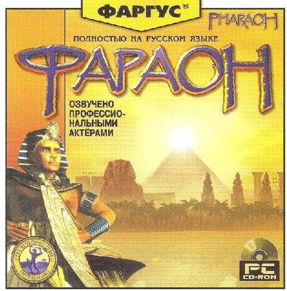
There was another problem, when some of the city sounds, citizen voices and the commentator had an incorrect WAV header that told the engine they were 0 seconds long. Apparently there was an error during conversion. Sometimes the problem is unsuitable (old or new, doesn't matter anymore) versions of libraries (MSS32.DLL, MP3DEC.ASI, BNKADEC.ASI), which may not work correctly on a specific system. Not even compatibility mode and a VM save you. Then you just need to take these files from other games, for example from Zeus+Poseidon or Caesar III — some set will definitely work. In the Caesar, Pharaoh, Zeus series, sound problems were often related to the DirectMusic system, already outdated at the time. Caesar 3 and Pharaoh use MSS (Miles Sound System) version 5, which causes sound-playback problems on modern systems. Zeus and Emperor use MSS version 6, which works more adequately with DirectX 6+, so they have fewer such problems.
The Pharaoh 1.1 patch added sound support via DirectSound and fixed operation on the then-new Windows 2000. Funnily enough, Zeus had a fun bug called "Slow Gods Animation," due to which the gods' animation slows down if sound is enabled. After Windows XP, DirectMusic support was removed entirely, and sound playback is done through OS-level DirectMusic emulation, which became the cause of many sound problems not only in this line but in many old games.
Differences
And of course we should recall the gorgeous high-resolution trailer, which even won some award. I remember being impressed for a long time and expecting something new in the game itself. (You can watch the trailer in the original article on Habr.)
If I remember the history of Pharaoh's development correctly, at the time the demo came out the monument-building mechanic wasn't fully implemented. That is, the logic itself may have been there, but the textures weren't. And if you started building a monument, yellow dots would be drawn instead.
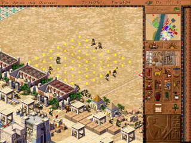
The differences began with the loading screen already (on the left is what was in the demo), and later the image familiar to all players, with the pyramid and the Impressions Games logo.
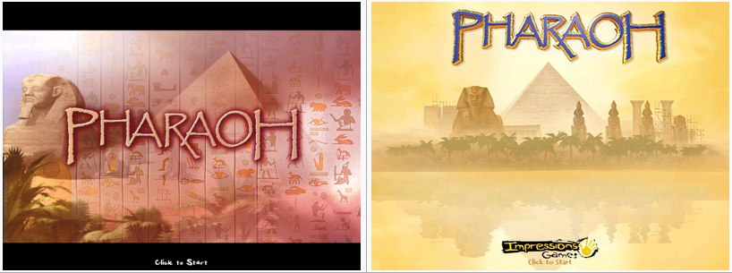
Another difference was in the main menu, which had a different set of buttons in different versions. Below are screenshots from the demo to the full version and the expansion.
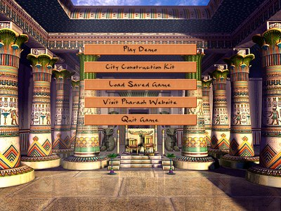
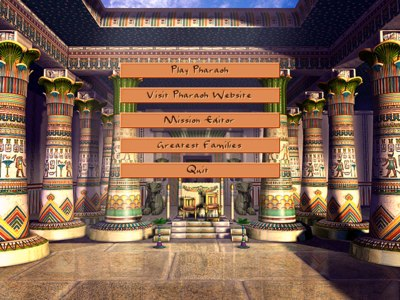
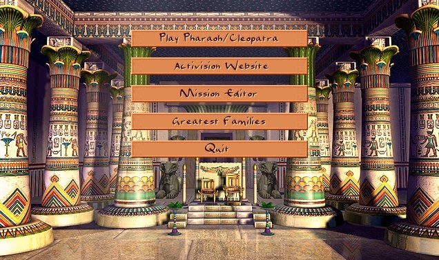
In general, if you're curious, you can wander through the game's resources and see how it's all laid out. But for that you'll need either SGReader, which can unpack sg3 archives — but that tool is static and can't show animations in motion — or you can find my Akhenaten project on GitHub (github.com/dalerank/Akhenaten); in my free time I'm restoring the original engine, and there you can already watch the animations in motion.

If you wander through the game's resources, you can notice that a lot of things weren't added even in the expansion. How about, for example, reserved room for five more deities? Here are the unpacked resources with the game's main text.
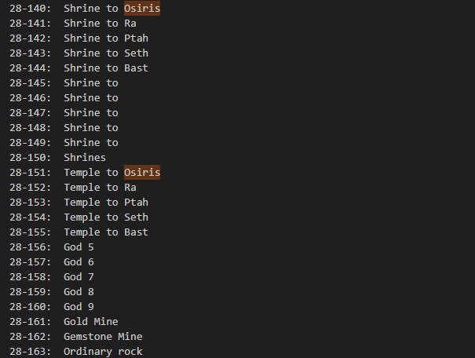
Which is, in principle, not surprising for a civilization where the gods occupied a central place in the culture and worldview, embodying the forces of nature and social order. The pantheon of Egyptian gods is very extensive and included hundreds of deities — if I remember correctly, over three hundred gods, deities and divine beings, each of which played its role in maintaining harmony, social and spiritual life. Gods could take anthropomorphic forms, look like animals, or combine features of human and beast. Among the most revered deities were Ra, the sun god, who "resurrected" every morning, bringing light and life, and Osiris, god of the afterlife and rebirth, symbolizing the eternal cycle of life and death. Isis, Osiris's wife, was considered the patroness of magic and motherhood, and their son Horus was the protector of pharaohs and the embodiment of royal power. Anubis, the jackal-headed god who escorted the souls of the dead to the afterlife, also held an important place. Each of the gods had its own temples, cults and rituals.
It looks like the developers were going to expand the pantheon to 10, but in the end kept the old system from Caesar with five deities: Osiris, Ra, Ptah, Set, Bast. This is more likely related to a lack of time for development and balancing — the gods in Caesar didn't always work correctly, let alone adding new ones.
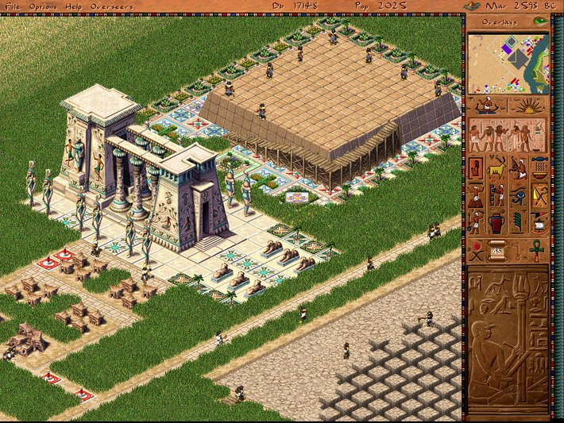
If you look closely at the textures from the demo, it turns out they're actually from Caesar: on the left in the demo, the grass is exactly the same as in the previous game. On the right the textures have already been redrawn for Pharaoh.
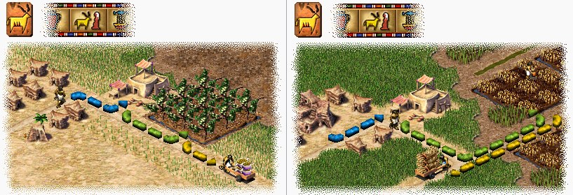
The evolution of the main interface is also easy to trace: from left to right — the texture from Caesar (the marble background replaced with yellow, can be found in the demo resources), then with a marble background and without some buttons (this version was in some demos for Europe), then the more familiar texture from a later demo, and finally the texture in the final version — empty, as in the game.
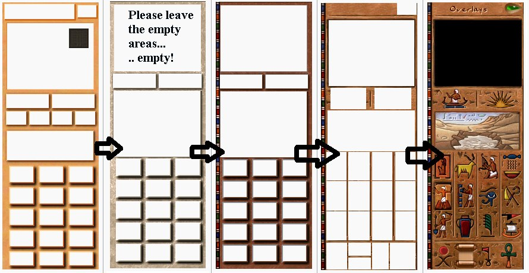
The textures for fertile land also changed, not much, but became more in the style of the game. In general, the mechanic of destroying part of the map was quite interesting for city-builders, since it allowed dynamic behavior to be done relatively cheaply. In fact there was no flood on the map at all — at a certain frequency we simply change the fertile-land texture to water and then restore it back as it was. But in motion, at the time of release, it looked stunning, because the competitors couldn't offer anything like it.
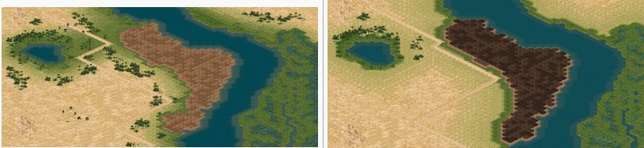
It seems simple. I don't know how much time the authors spent developing this flood mechanism, but even knowing how it works and having partially reverse-engineered sources, it took me more than three months to make it work properly.

Another visible difference is the appearance of irrigation canals and the corresponding mechanic for them. If in the demo this building sent out a worker with water (who later became a firefighter), in the release there were already irrigation canals filled from a special building. An amusing mechanic that grew out of the aqueduct system, which would effectively have been forgotten otherwise. Judging by the remaining bits of code and logic, the canals are former aqueducts, and the water pumps are reservoirs from the previous installment.
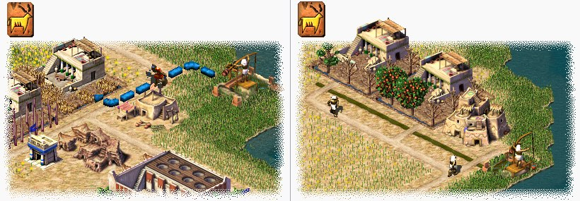
Also, some buildings and citizens that didn't fit the game's setting became unnecessary, although resources existed for them, such as: Mud Tower, Mud Gatehouse, Brick Tower, Brick Gatehouse, Military Academy 2, Military Academy 3 and several others. A detailed description of what went missing can be seen here (tcrf.net/Proto:Pharaoh_(Windows)).
In my free time
If you're interested in how it all works on the inside, come to GitHub or to the site — some sympathizers set up a site for me, I'll fill it with content when I can and keep a devblog. From the latest news: it's playable up to mission 8 and can run on Macs, there are no pyramids yet, only mastabas. The game is entirely in C++, with a self-written JS VM for configs and a bunch of various tricks, like pulling a class name at compile time with the help of black magic and templates. There won't be a Telegram, sorry — I just don't get along with it somehow.
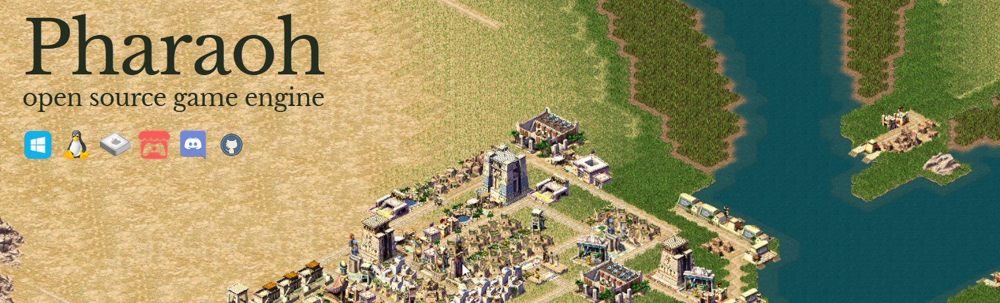
UPD: I was asked to add the link akhenatengame.squarespace.com.
← All articles